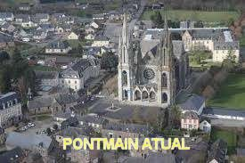
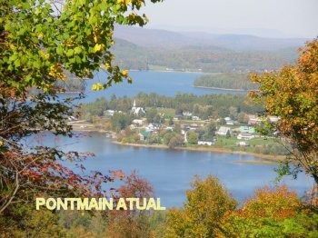
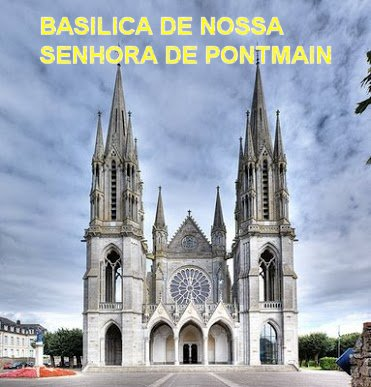
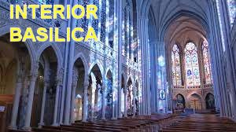
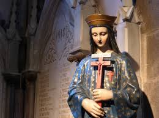
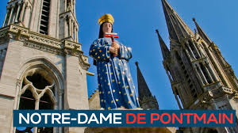
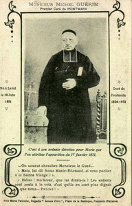
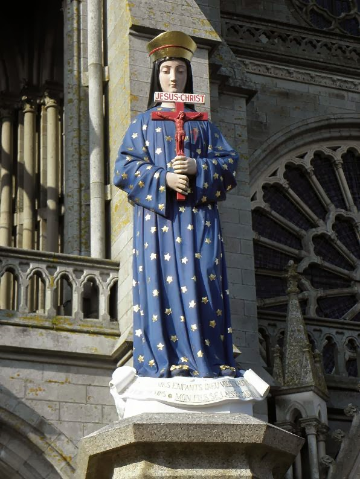
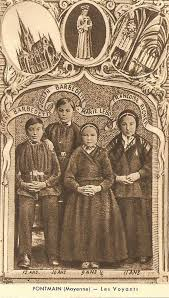

"FOTOGRAFIAS"









CONVITE
Este Site foi construído pelo Apostolado dos Sagrados Corações. Clique aqui ou no endereço abaixo para visitar o nosso PORTAL. Nele encontrará uma apreciável quantidade de Sites sobre o CRIADOR, o ESPÍRITO SANTO, JESUS DE NAZARÉ, sobre NOSSA SENHORA, os SANTOS ANJOS e Sites que apresentam a Vida e Obra de diversos SANTOS. Todos eles elaborados com muito amor e dedicação, fundamentados na Sagrada Escritura, na Tradição Cristã, na Vida e Obra dos Santos e nas Manifestações Sobrenaturais, com a intenção de somente informar a Verdade.
http://www.apostoladosagradoscoracoes.com/
Desejando comunicar-se utilize o E-mail abaixo:
jfnovaes@hotmail.com
apostoladosagradoscoracoes@hotmail.com
FIRMAS QUE DIVULGAM
O SITE